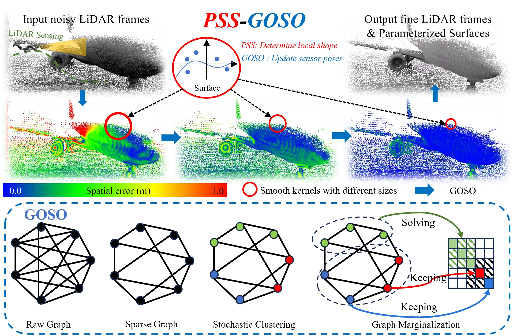

Graph Optimality-Aware Stochastic LiDAR Bundle Adjustment with Progressive Spatial Smoothing
What can PSS-GOSO do?

Graph optimality-aware stochastic optimization with progressive spatial smoothing for a robust, efficient, and scalable LBA. The Progressive Spatial Smoothing (PSS) module extracts robust LiDAR feature association exploiting the prior structure information obtained by the polynomial smooth kernel. The Graph Optimality-aware Stochastic Optimization (GOSO) module first sparisifies the graph according to optimality for an efficient optimization. GOSO then utilizes stochastic clustering and graph marginalization to solve the large-scale state estimation problem for a scalable LBA.